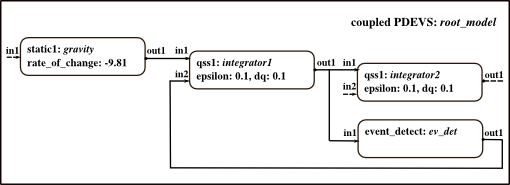

Initialization Script: Bouncing Ball
Initializes a QSS1 model of a ball bouncing up and down consisting of one static, two integrators and one event detection atomic model.
Contents
Basic models are taken from folder DEVSPATH/01-modelbase/qss.
Call: init_qss1_ball_simple
File: DEVSPATH/02-examples/discrete/bouncing_ball_qss/init_qss1_ball_simple.m

Model Structure
Preparation
%clear classes; clc; global SIMUSTOP % to stop simulation by condition SIMUSTOP = 0; global HYBRID HYBRID = 0; %discrete-only simulation elapsed = 0;
Create the Model
Atomic models' classes: static1, qss1, event_detect.
% initial values for integrators height = 1; velocity = 20; % Coupled DEVS root_model % % Instantiate an atomic DEVS of type static1 % that implements differential equation for gravity. rate_of_change = -9.81; % system parameter inistates = struct('sigma',0,'rate',-9.81); gravity = static1('gravity',inistates,elapsed,rate_of_change); % Instantiate two atomic DEVS of type qss1. First qss1 integrator calculates % and records current velocity, second current height. epsilon = 0.1; dq = 0.1; % system parameters inistates = struct('sigma',inf,'X',velocity,'dX',0,'q',floor(velocity/dq)*dq,'se',0,'traj',[],'qtraj',[]); integrator1 = qss1('integrator1',inistates,elapsed,epsilon,dq); epsilon = 0.1; dq = 0.1; % system parameters inistates = struct('sigma',inf,'X',height,'dX',0,'q',floor(height/dq)*dq,'se',0,'traj',[],'qtraj',[]); integrator2 = qss1('integrator2',inistates,elapsed,epsilon,dq); % Instantiate an atomic DEVS of type event_detect. Detects, if ball % hits ground. inistates = struct('sigma',inf,'X',height,'dX',0,'se',0,'traj',[],'eventtraj',[]); ev_det = event_detect('ev_det',inistates,elapsed);
Instantiate the root_model
root_model = coupled('root_model');% in and output ports, always none for root model addcomponents(root_model,{gravity,integrator1,integrator2,ev_det}); Zid_model = {'gravity','out1','integrator1','in1';... 'integrator1','out1','integrator2','in1';... 'integrator1','out1','ev_det','in1';... 'ev_det','out1','integrator1','in2'}; set_Zid(root_model, Zid_model);
Take a look at the model
showall(root_model);
Check(root_model);
set_observe(root_model, 1);% track all state variables in s of atomics
Finally
Done! Now the root_coordinator can be called to simulate the model:
root_model = r_c_discrete(root_model,tstart,tend)
After simulation you can plot the results via plot_results_qss1_ball(root_model,tstart,tend).
Commands to initialize, simulate, analyse the example:
>> init_qss1_ball_simple;
>> root_model = r_c_discrete(root_model,0,20);
>> plot_results_qss1_ball(root_model,0,20);
DEVS Tbx Home Examples Modelbase << Back